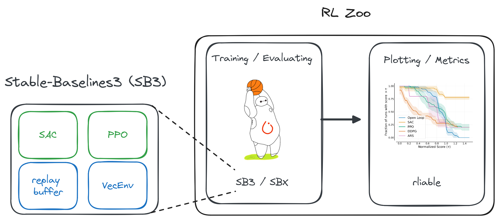

Boring problems are important
Start simple!
Motivation
Learning directly on real robots
Simulation is all you need?
ISS Experiment (1)

Credit: ESA/NASA
ISS Experiment (2)

Before
After, with the 1kg arm
Can it turn?
Additional Video
Outline
- Task design
- Choosing an algorithm
- Safety layers
- Running the experiments
- Troubleshooting
Task design
- Observation space
- Action space
- Reward function
- Termination conditions
RL in Practice: Tips and Tricks - Video

Today: about proper handling of truncations for infinite horizon tasks
Truncations for infinite horizon tasks
truncation vs termination
Recall: DQN Update
- DQN loss:
\[\begin{aligned} \mathcal{L} = \mathop{\mathbb{E}}[(\textcolor{#a61e4d}{y_t} - \textcolor{#1864ab}{Q_\theta(s_t, a_t)} )^2] \end{aligned} \]
- Regression $ \textcolor{#1864ab}{f_\theta(x)} = \textcolor{#a61e4d}{y}$
with input $\textcolor{#1864ab}{x}$ and target $\textcolor{#a61e4d}{y}$:
- input: $\textcolor{#1864ab}{x = (s_t, a_t)}$
- if $s_{t+1}$ is non terminal: $y = r_t + \gamma \cdot \max_{a' \in A}(Q_\theta(s_{t+1}, a'))$
- if $s_{t+1}$ is terminal: $\textcolor{a61e4d}{y = r_t}$
- if $s_{t+1}$ is truncation: $y = r_t + \gamma \cdot \max_{a' \in A}(Q_\theta(s_{t+1}, a'))$
In Practice
Questions?
- Task design
- Choosing an algorithm
- Safety layers
- Running the experiments
- Troubleshooting
Which algorithm to choose?
Recent Advances: Jax and JIT
Up to 20x faster!

Stable-Baselines3 (PyTorch) vs SBX (Jax)
Recent Advances: DroQ
More gradient steps: 4x more sample efficient!

RL from scratch in 10 minutes
Using SB3 + Jax = SBX: https://github.com/araffin/sbx
Questions?
- Task design
- Choosing an algorithm
- Safety layers
- Running the experiments
- Troubleshooting
How not to a break a robot?
1. Task Design (action space)

Ex: Controlling tendons forces instead of motor positions
2. Hard Constraints, safety layers
Padalkar, Abhishek, et al. "Guiding Reinforcement Learning with Shared Control Templates." ICRA 2023.
3. Leverage Prior Knowledge

Smooth Exploration for RL
Raffin, Antonin, Jens Kober, and Freek Stulp. "Smooth exploration for robotic reinforcement learning." CoRL. PMLR, 2022.
Learning to Exploit Elastic Actuators
Raffin et al. "Learning to Exploit Elastic Actuators for Quadruped Locomotion" In preparation, 2023.
Questions?
- Task design
- Choosing an algorithm
- Safety layers
- Running the experiments
- Troubleshooting
Stable-Baselines3 (SB3)

Reproducible Reliable RL: SB3 + RL Zoo
RL Zoo: Reproducible Experiments
- Training, loading, plotting, hyperparameter optimization
- W&B integration
- 200+ trained models with tuned hyperparameters

In practice
# Train an SAC agent on Pendulum using tuned hyperparameters,
# evaluate the agent every 1k steps and save a checkpoint every 10k steps
# Pass custom hyperparams to the algo/env
python -m rl_zoo3.train --algo sac --env Pendulum-v1 --eval-freq 1000 \
--save-freq 10000 -params train_freq:2 --env-kwargs g:9.8
sac/
└── Pendulum-v1_1 # One folder per experiment
├── 0.monitor.csv # episodic return
├── best_model.zip # best model according to evaluation
├── evaluations.npz # evaluation results
├── Pendulum-v1
│ ├── args.yml # custom cli arguments
│ ├── config.yml # hyperparameters
│ └── vecnormalize.pkl # normalization
├── Pendulum-v1.zip # final model
└── rl_model_10000_steps.zip # checkpoint
Learning to race in an hour
Hyperparameters Study - Learning To Race

Questions?
- Task design
- Choosing an algorithm
- Safety layers
- Running the experiments
- Troubleshooting
It doesn't work!
- Start simple/simplify, iterate quickly
- Did you follow the best practices?
- Use trusted implementations
- Increase budget
- Hyperparameter tuning (Optuna)
- Minimal implementation
Minimal Implementations
- Standalone / minimal dependencies
- Reduce complexity
- Easier to share/reproduce
- Perfect for educational purposes
- Find bugs
- Hard to maintain
Example
A Simple Open-Loop Baseline for RL Locomotion Tasks

Raffin et al. "A Simple Open-Loop Baseline for RL Locomotion Tasks" In preparation, CoRL 2024.
35 lines of code

Cost of generality vs prior knowledge
Conclusion
- Ingredients for task design
- Safety layers
- Reproducible experiments
- Start simple + minimal implementations
Questions?
Backup Slides
Who am I?
Stable-Baselines

bert

David (aka HASy)
German Aerospace Center (DLR)
Plotting
python -m rl_zoo3.cli all_plots -a sac -e HalfCheetah Ant -f logs/ -o sac_results
python -m rl_zoo3.cli plot_from_file -i sac_results.pkl -latex -l SAC --rliable